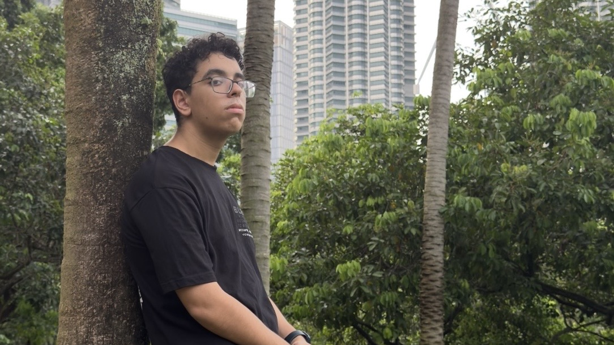

Yousof
Selim
Software Engineer

About
Yousof Selim, a software engineer
I do websites, applications, games, photo editing, and video editing
Experience
Student
Global International School
Foundation for Information Technology
Multimedia University
Bachelors Degree in Software Engineering
Sunway University